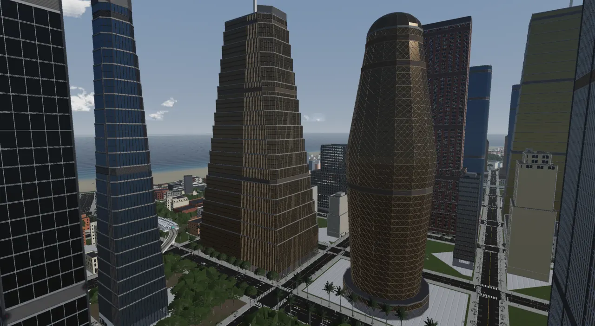
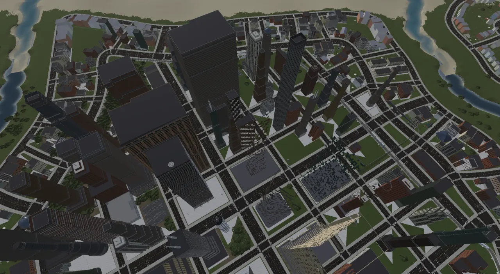
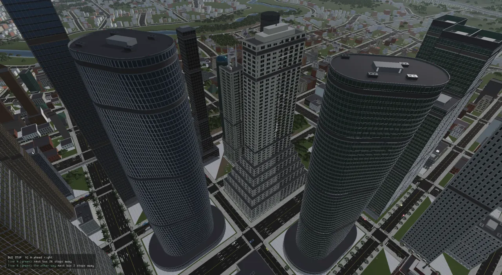
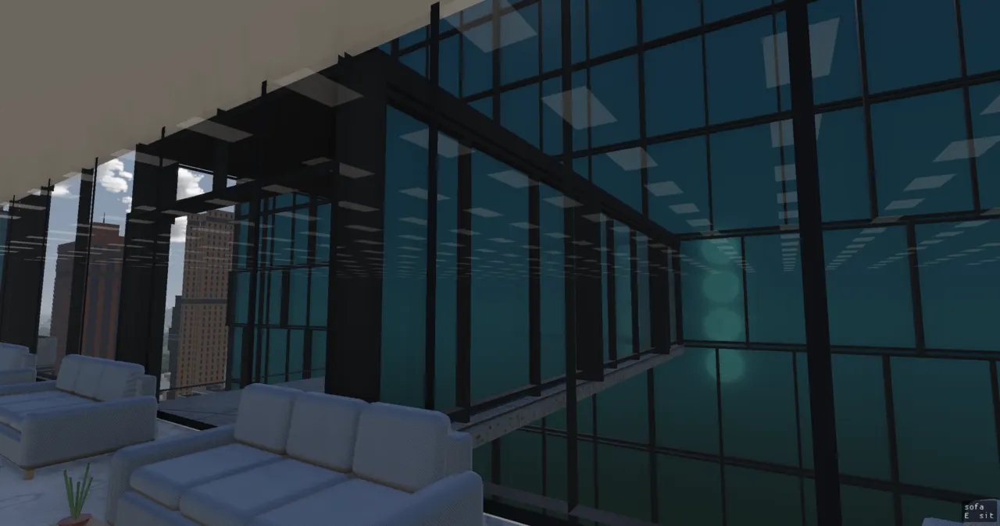
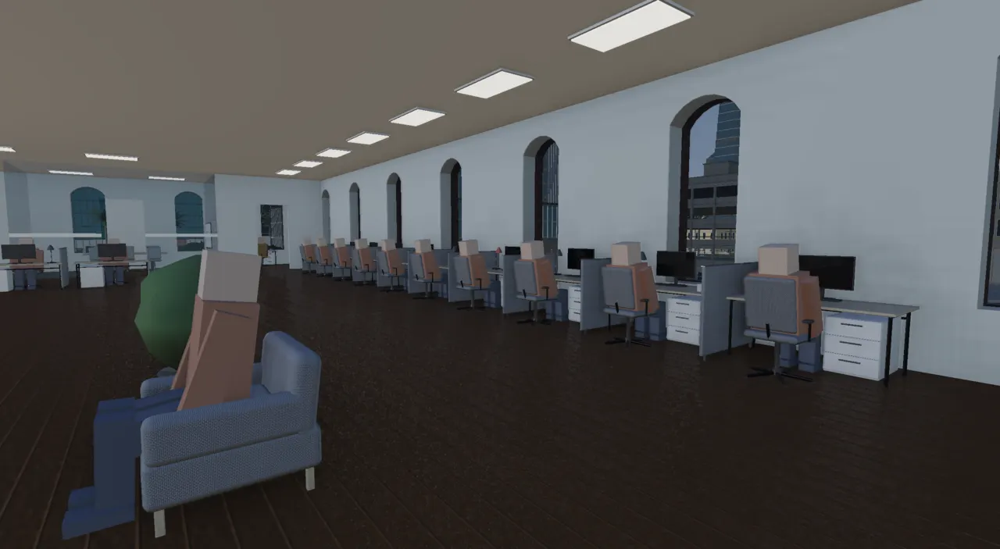
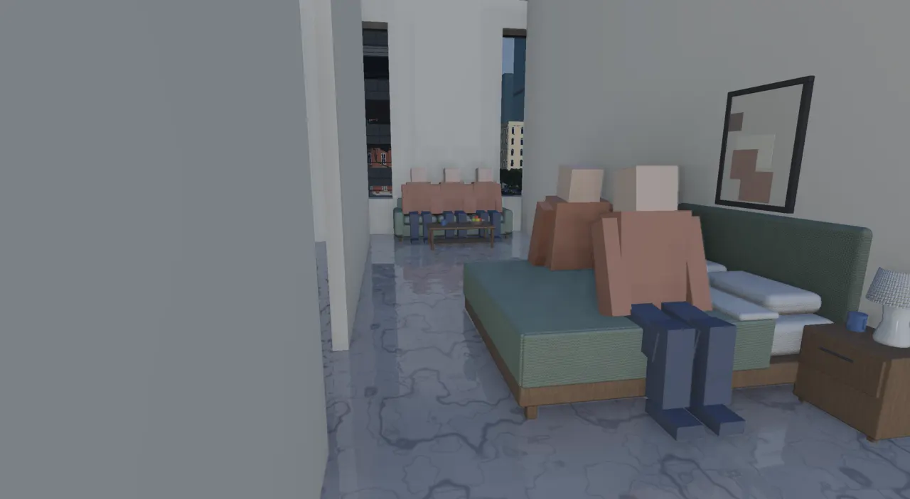
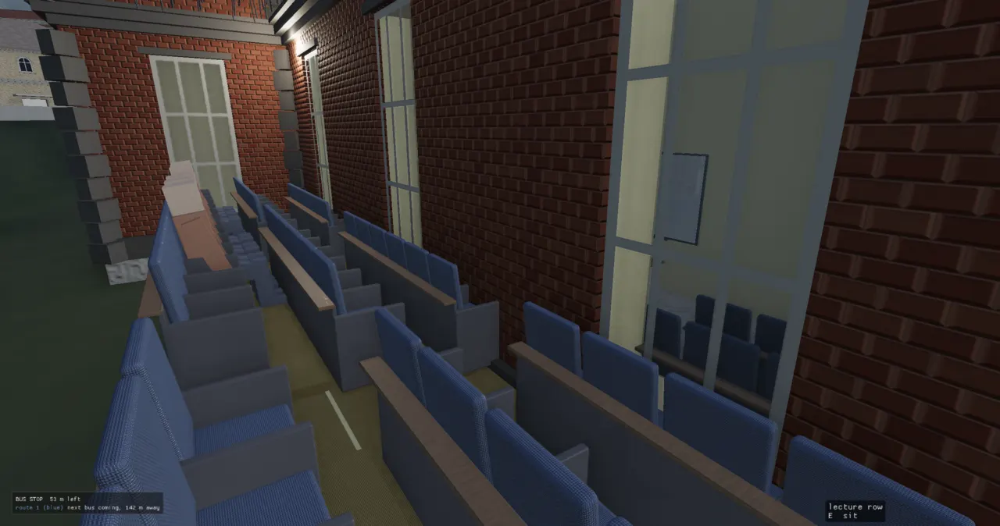
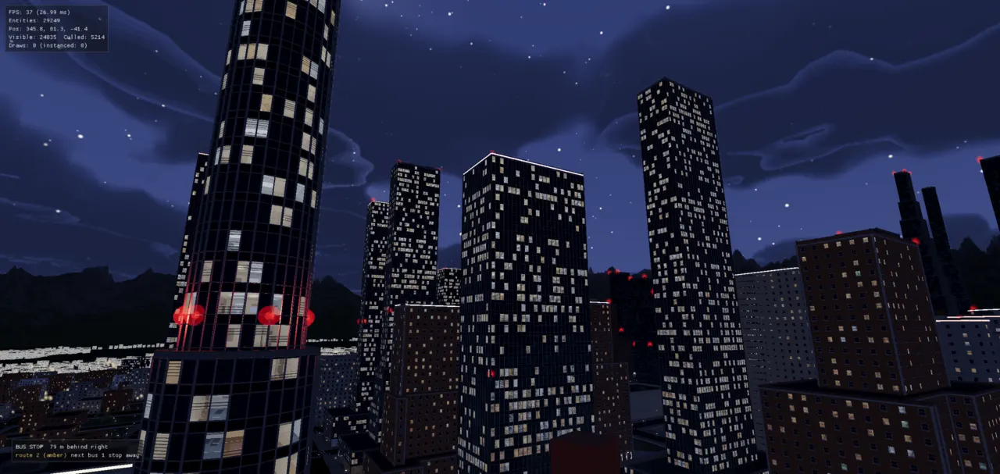

Buildings: the shape grammar and the architectural toolkit
Every building in a city is grown from three things: its lot's polygon, a few hundred bytes of parameters, and the height of the ground. A lot becomes a rectangle on a site plan, a recipe fills in the parameters, a mass gives an outline at every storey, a facade grammar splits each wall into bays and openings, and the same storey outlines feed the interior, the colliders and a reachability gate. This page follows one lot through all of it.

The problem
A city has thousands of buildings, and none of them is modelled by hand. Each one has to look like a believable building from across the river and from the pavement, stand on its lot without crossing a road, have a front door on the street, and, since enterable buildings landed (ADR-0080), be a real place inside: a lobby, stairs and lifts to every floor, rooms with furniture, a way onto the roof. The outside and the inside must agree to the centimetre, or the player walks through a window or into a wall.
Three ideas carry the whole system:
Grow, don't store
A building is a pure function of (plan, params, baseY).
The city stores the inputs (the regen key) and regrows the meshes whenever it needs them: the interior
when the player walks up to a door, a wall again when its neighbour turns out to be shorter.
One answer, many readers
Where a door is, where a window is, what each storey's outline
is: each is decided once (storeyPlans, facadeLayout, the core) and read by the facade,
its far tier, the inner walls, the furniture, the collider and the graph.
Words, not one-offs
A new shape is a new word in the grammar (a transform on a stack, a cell in a complex), never a private grower. Glenn, 2026-10-15: "it needs to be done using the building shape grammar and not a one off function or chunk of code".
The older buildings page describes the grammar as it stood before the site plans and the toolkit (recipes, tripartite composition, the facade grammar, roofs, the style book). It is still a good picture of the facade vocabulary; this page is the current pipeline.
The pipeline: from a lot to meshes
The lot pass (growLotBuildings in city_lots.cpp, called through
engine::growCity) runs in passes: PASS A parcels every block into lots, PASS B places the landmarks
(one capitol, a school per quarter), PASS C grows every lot, and a pass after it fixes the party walls. Inside
PASS C each lot goes through the same stages:
The stages a lot goes through. Blue boxes are the stages the architectural toolkit (ADR-0174) reworked: the mass, the storeys it slices, and the facade words that read them; every form reaches the rest of the system as storey outlines. Stages 1–8 run when the lots are baked; stage 9 runs in the game, on demand, from the record alone.
| stage | what it decides | where |
|---|---|---|
| Lot | a polygon with a frontage direction (toward its street), cut frontage-first from the block | parcel.h subdivideBlock |
| Site plan | the buildable rectangle square to the street, and the open ground round it | site_plan.h |
| Recipe | what stands here: a named recipe from the district's table fills a BuildingRecipe | architect.h |
| Mass | the form: a stack of sections, a field, a mesh, or a complex of cells | mass.h, mass_stack.h, implicit.h, mesh_mass.h, cells.h |
| Storeys | one outline per storey, its floor height and tier | storeyPlans (shape_grammar.h) |
| Facade words | per plan edge per storey: the bays, every opening's span, sill and head, the shops | facadeLayout (shape_grammar.cpp) |
| Meshes | parts by material class (PartId), a far tier, a proxy, attach points, roof items | growPlanBuilding |
| Record | what the runtime needs to regrow and enter it | building_records.h, lot_cache.h |
Lots and the site plan
A block is a face of the road graph (see roads). The parceller walks the block's
edges and lays lots along each street (by default frontWidth 16 m wide and lotDepth 28 m deep),
mitred at the corners, with the leftover middle as one court; only a block the walk cannot fill falls back to
recursive bisection of its oriented bounding box (parcel.h). Every lot keeps a frontage
vector pointing at its street, which is how a building knows where its front door goes.
Lots beside a non-square corner come out as trapezoids, because the walk clips each strip by the corner's bisector. Until September the grammar extruded that trapezoid verbatim, so every building filled its lot and many had a slanted wall. ADR-0086 put a blueprint layer in between, on the rule buildings are rectilinear; lots are not; the difference is paving, planting, a plaza or a yard:
Left: a 34 m lot whose side lines lean in, with residential yards (front 3 m, side 1.5 m, rear 5 m).
SiteFrame sits on the frontage edge: u along the street, v inward. Right:
the same lot rastered on the frame (drawn at 1 m; the code uses 0.5 m); a cell is kept when its centre is in the
lot and at least its edge's yard from every edge. The blue block is the largest rectangle of kept cells, here
23 × 12 m. The ground left over is cut by the rectangle's lines into a forecourt, side yards and a rear yard
(openSpacePieces). This diagram was computed with the same rules, not drawn by eye.
// Largest rectangle of 1s: per row, a histogram of consecutive usable // cells above, and the classic stack scan for the widest bar span. std::vector<int> height(nx, 0), stack; int bestArea = 0, bi0 = 0, bi1 = -1, bj0 = 0, bj1 = -1; const int minCells = std::max(1, static_cast<int>(std::ceil(minSide / cell))); for (int j = 0; j < ny; ++j) { for (int i = 0; i < nx; ++i) height[i] = mask[static_cast<std::size_t>(j) * nx + i] ? height[i] + 1 : 0; stack.clear(); for (int i = 0; i <= nx; ++i) { const int h = i < nx ? height[i] : 0; while (!stack.empty() && height[stack.back()] >= h) { const int top = stack.back(); stack.pop_back(); const int hh = height[top]; const int left = stack.empty() ? 0 : stack.back() + 1; const int width = i - left; if (hh >= minCells && width >= minCells && hh * width > bestArea) { bestArea = hh * width; bi0 = left; bi1 = i - 1; bj0 = j - hh + 1; bj1 = j; } } stack.push_back(i); } }
The raster never asks about roads (that check walks every road edge and is far too slow per cell). Instead the lot
pass searches the lot, then the lot inset by 0.8, 1.6, 2.6 and 3.6 m, until the rectangle's corners and edge
midpoints clear the road corridors (city_lots.cpp, the SITE PLAN block in PASS C). Yards
come per district from BlockInfo::yards: financial and commercial 0 / 0.3 / 3 m, old town 0 / 0.3 /
2, industrial 2 / 2 / 2, residential 3 / 1.5 / 5 (ADR-0086). Downtown, the leftover ground is not grass: an urban
lot is paved to its lot line at the pavement's height, and the building's base is that paving, so a
downtown door is flush with the street.

How it got here. The first thing ADR-0086 built was a census, which put numbers
on the complaint: on piedmont_mini only 26.4 % of buildings had no oblique corner. After the site plan: 92.1 %
(lanelab metro 59.5 → 81.5 %, lattice metro 54.9 → 86.9 %). Coverage fell by about a quarter, and the lattice
metro's tallest tower lost ten floors (50 → 40), because the slenderness cap reads the plate's short side and the
honest rectangle is smaller than the trapezoid's bounding box had flattered it. Rejected: snapping the polygon's
corners inside the grammar (the grammar must stay pure in its inputs), and making the parceller emit rectangles
("the lots are trapezoids in a real city; it is the building that is not"). Gate:
grown_ holds nine in ten buildings rectilinear. Glenn later
asked to keep the occasional trapezoid: a lot no rectangle fits keeps its shape rather than going green.
Open lots. A lot that does not build still gets a use
(ADR-0144): before it
falls back to grass, emitGreen offers it a car park, a playground, a community garden or a pocket park,
in an order set by district, with about 15 % left vacant on purpose. On island_8_nature 2,223 of 13,156 lots had
been bare grass; afterwards there were 17 car parks, 180 playgrounds, 293 gardens and 1,356 pocket parks. Each
sculptor works on the largest rectangle square to the lot's street edge (largestFrameRect), in the
same SiteFrame (since ADR-0173 the one plan frame every lot sculptor uses).
The architect: recipes, districts and height
The architect (architect.h) decides what stands on a lot. The city is zoned into five
DistrictTags (Financial, Commercial, Residential, OldTown, Industrial); each district has a weighted
table of named recipes, and every lot asks architectPick(tag, shortSide, area, seed, coreness).
Coreness is how deep downtown the lot sits (1 at the centre, 0 at the rim), and it is what peaks the
skyline. Landmarks (capitol, courthouse, hospital, a school per quarter) are not rolled per lot but placed on the
best-scoring lots by quota (planLandmarks), and a whole block the parceller could not fill becomes one
landmark site (architectBlockLandmark). The registry holds 79 named recipes, from
cottage and rowhouses to bundled_tubes and mall_complex.
void recipeGlassTower(BuildingRecipe& out, Hash& rng, RecipeCtx& cx) { BuildingParams& p = out.params; // Density round ("taller than 40 stories"): dead-centre coreness lifts // the glass cluster to 55-62 floors; the rim keeps its 10-16. const int lift = static_cast<int>(cx.coreness * 46); p.floors = rng.irange(cx.roomy ? 10 : 6, cx.roomy ? 16 : 9) + lift; p.groundRetail = true; dress(p, FacadeStyle::GlassCurtain, rng); if (p.floors > 8) { p.setbackFloors = rng.irange(4, 6); p.setbackEvery = rng.range(1.2, 1.8); } if (p.floors > 16) p.setbackFloors = rng.irange(5, 7); cx.slender = 3.0 + cx.coreness * 4.5; // ... if (cx.roomy && rng.unit() < 0.35) out.massing = BuildingRecipe::Massing::Circle; else if (cx.roomy && cx.coreness > 0.4 && rng.unit() < 0.5) out.massing = BuildingRecipe::Massing::TowerInPlaza; out.placeType = "office"; if (p.curtainWall) glassStyle(p, rng, true); // every glass tower its own glass (NYC variety M2) towerTop(p, {{2, 30}, {4, 12}, {3, 10}, {5, 10}, {6, 10}, {8, 6}, {7, 4}, {1, 18}}); // buildings M2 out.name = "glass_tower"; }
Two rules keep recipes honest. The slenderness cap: after the recipe, capFloors limits the
floors so the building is no taller than its plate's short side times slender (1.8 for most recipes;
the tower recipes ask for more, rising with coreness). Height drives structure and cladding
(ADR-0040): load-bearing
masonry does not scale (the Monadnock Building's six-foot brick base is the classic example), so from about 12
storeys a real wall becomes a curtain wall hung off a frame. In the code this is a property of the recipe tables
rather than one function: tall recipes dress GlassCurtain, the masonry recipes roll short floor
counts, and the architect's tests hold the tables coherent (architect_: the rim
keeps to 16 floors). Storey heights follow use too: an office floor is 3.9–4.1 m floor to floor, a tower lobby
6–8 m, a flat 3.2 m (storeyHeightsByUse).
What lives in Lua
ADR-0042 set the rule
for the whole city: a C++ vocabulary of fast primitives, with the recipes in Lua. For buildings the split landed
like this. The grammar, the solvers and the 79 recipe bodies are C++ (a recipe branches on coreness and
feeds the floor cap back through RecipeCtx::slender; porting the bodies is what an abandoned branch
tried and failed). What is data in Lua:
assets/: how each named recipe looks, overlaid onto its params just before it grows.scripts/ style_ book.lua archetype_book.lua.example: the selection layer, each district's weighted table over named recipes (absent, the compiled ladders apply; a book with the same weights reproduces the same city exactly).floor_programs.luaandfurniture_rooms.lua: how a floor is zoned and what each kind of room holds (below).- the
building.*table:grow,grow_plan_parts,section,mass,cells,envelope,circulation,space_graph,grow_floor, so a lab script grows exactly what a lot grows.
for i, name in ipairs(LINE) do local w, d = LOTS[name][1], LOTS[name][2] local cx = x + w / 2 local req = { recipe = name, seed = seed0 * 101 + row * 1009 + i * 7, coreness = coreness, plan = rect(w, d) } local parts = building.grow_plan_parts(req)
The regen key and the records
Everything the recipe decided lands in one plain struct, BuildingParams (shape_grammar.h):
floors and storey heights, bay width, cladding part and colours, window style, roof, the massing envelope and its
numbers, the curtain-wall style, the core switch, party walls, links to neighbouring cells, the shop mix. It is
deliberately a POD of numbers, not polygons, so it serialises byte for byte into the lot cache
(kBuildingParamsSize = 824 in lot_cache.cpp, version 23) and so the exterior and the
interior derive the same tiers from it. A grown building's runtime identity is a record:
struct BuildingRecord { Poly2 plan; Real baseY = 0; // wall base (pad + plinth) Real groundY = 0; // graded pad plane Real height = 0; // massing height above baseY BuildingParams params; std::vector<DoorSpec> doors; bool enterable = false; std::string recipe, type, district; std::vector<Vec3> beacons; // aviation lamp centres (BeaconLightSystem's sprites and lights) std::vector<RoofItem> roof; // what stands on the roof: the collider's walls, the roof cell's holes };
The records sit in a 24 m spatial hash (CityBuildings) so the interior system can ask "which
building contains this point" cheaply. Interiors are grown at run time from the record, so an interior change
needs no re-bake. Exteriors are baked into the lots bundle, so a change to the exterior grammar or the lot pass bumps
kLotsBuildTag (lots_producer.cpp) and every lots bundle rebuilds (see
bakes).
How the main types relate. StoreyPlan[] is the hub: the facade, the core, the rooms and the
graph all read the same outlines, which is why the inside and the outside agree.
The mass and the stack: a form becomes storeys
Before the toolkit, a building was one straight-edged polygon in one frame, copied storey by storey in nested tiers (the setbacks and envelopes of ADR-0086). The architectural toolkit (ADR-0174, issue #105) replaced that model with two foundations. Foundation B, the exterior model, starts from the mass: anything that can give its outline at a height (a slice) and its skin as a mesh.
// One height's outline(s): disjoint pieces, each a section with its holes. struct Slice { std::vector<Section> pieces; int tier = 0; // the mass's own tier at this height (a stack's entry): what the storey view calls `tier` // ... }; // ... struct Mass { virtual ~Mass() = default; virtual Slice slice(Real y) const = 0; // the outline at height y above the base (y < 0: the base's) virtual Real height() const = 0; // to the top of the last storey virtual MassBounds bounds() const = 0; // The skin: lod 0 the loft of the storey slices (side faces between consecutive outlines), lod 1 the native // form where the source has one (a sweep's or an SDF's polygonised skin); a stack's is the loft either way. virtual RenderMesh shell(int lod, const Vec3& colour) const = 0; }; // THE BRIDGE into the storey view: storey 0 the ground (the base slice, `groundHeight` tall), then `floors` // storeys of `floorHeight`, each the slice at its own floor height. The tier is the mass's own (a stack's entry). std::vector<StoreyPlan> sliceStoreys(const Mass& mass, const BuildingParams& params);
sliceStoreys is the slice bridge: it asks the mass for its outline at the ground and then at
each floor height, and hands out StoreyPlans. Everything downstream (the facade, the room planners,
the collider, the census) reads storey plans and does not care which kind of mass made them. The mass sources are:
| mass | what it is | ADR |
|---|---|---|
| Stack | sections over storey ranges, each under keyed transforms (rotate, scale, slide) and in a relation to the entry below | 0175 |
| Implicit | a signed distance field; each storey is the field's zero contour at its height | 0177 |
| Mesh | a closed glTF from assets/masses, fitted to the lot and sliced per storey: the artist's hatch | 0177 |
| Complex | cells standing against each other, each grown as its own building | 0176 |
The stack is the workhorse. Every older massing (the uniform setbacks, the 1916 street wall and its steps,
the sky exposure plane, the taper, the slab, the feathered pencil tower) is now a preset: a stack with
identity transforms, built by stackOf. It was proven byte-identical before anything new was added
(the_). A new form is a transform on an entry, never
new tier code.
enum class Relation : uint8_t { Nest, Flush, Support }; struct StackEntry { Section section; int k0 = 0, k1 = 0; // the storeys it covers, inclusive (0 = the ground storey) Relation rel = Relation::Nest; Transform xf; Real minOverlap = 0.6; // Support: the fraction of a storey's area resting on the one below Real maxOverhang = 6.0; // Support: how far a storey may hang past the one below (m) bool varies() const { return !xf.identity(); } }; struct Cap { enum class Kind : uint8_t { Parapet, Flat, Spire, Dome, Vault, Sloped, Aperture, Flared }; Kind kind = Kind::Parapet; Real rise = 0; }; struct Stack : Mass { std::vector<StackEntry> entries; // the base first; a storey belongs to the LAST entry whose k0 it reaches Cap cap; Real groundH = 4.0, floorH = 3.4; int floors = 0; // storeys above the ground // ... std::vector<MassTier> tiers() const; Slice slice(Real y) const override; // ... };
Left: a storey belongs to the last entry whose k0 it reaches. Nest is a
setback; Support lets a storey hang past the one below (the stacked-modules envelope), drawn with its
floor plate whole and a soffit underneath, the lower parapet clipped to outside it. Right: a Transform
holds five curves (rotation, scale along u and v, slide along u and v) keyed over the entry's storeys, applied
about a pivot.
std::vector<StoreyPlan> sliceStoreys(const Mass& mass, const BuildingParams& params) { std::vector<StoreyPlan> out; const Slice base = mass.slice(-1.0); if (base.empty()) return out; out.push_back({base.outline().tessellate(), 0, params.groundHeight, 0}); Real y = params.groundHeight; for (int i = 0; i < params.floors; ++i) { const Slice s = mass.slice(y); if (s.empty()) break; out.push_back({s.outline().tessellate(), y, params.floorHeight, s.tier}); y += params.floorHeight; } return out; }
The Section under each entry (section.h) is an outline made of edges (line,
arc, spline-owed) with holes, rather than a bare polygon. It knows its arcs, so a rounded corner's chords are each
one even facade bay (tessellateForBays), and it has exact rectilinear surgery
(chamfer, notch) and Clipper2 booleans (unite, subtract,
intersect) that re-tag chord runs as arcs afterwards. The Envelope field on the params
picks which preset or transform builds the stack:
| envelope | the form |
|---|---|
| None | today's uniform setbacks every setbackFloors |
| StreetWallSetback | 1916 New York: a base on the whole plan, one setback, steps every few floors, a centred shaft (Empire State, Chrysler) |
| SkyExposure | steps back along a plane rising skyRatio m per m, until the tower may rise straight |
| Taper, Slab, Feathered | One WTC's taper, the UN slab, the pencil tower stepping back on one face |
| Twist, Stack, Bulge, Curves | the transforms: rotation, slid modules, a scale curve (the lens tower), all three composed with a lean |
| Wave | an implicit form: the plan waved along its long axis, the wave climbing the height |
| Mesh | the artist's form from assets/masses |
Ruled glass. When a storey is turned or scaled against the one above and both outlines have the same
corners, each edge's curtain wall is a ruled face: its bottom edge on this storey's floor outline, its top
on the ceiling's, so a twist reads as one continuous surface (FaceRect::ruled,
planEdgeRuled). Where corners do not correspond (a field's contours), each storey is a flat facet and a
slab band, the union of the two outlines, closes the seam. Glenn, walking the first twisted tower: "they
look like layered cakes"; the ruled faces landed the same evening (ADR-0175).

Implicit masses and envelopes
Some forms are not any transform of one outline. The implicit mass
(ADR-0177) is the
engine's SDF kit with building words on top: sdfPlan (2D distance to a polygon),
sdfExtrude, and sdfWave, a warp of the space the field is read in. A storey is the field's
zero contour at the storey's mid height: sliceSdf samples a half-metre grid offset off the field's
own lines, traces it by marching squares, keeps the largest loop and simplifies it by Douglas–Peucker within
0.3 m.
The first implicit form taught a design rule. Glenn, on the wavy tower's first cut: "the interior of those offices
should just be a straight edge versus the exterior which can be wavy". So the envelope
(ADR-0178) lets any form
be either the floors or a skin round straight floors, by BuildingParams::skin: 0 the form is the
floors; 1 a double skin (straight floors a gap inside, the form a glass veil ruled storey to storey); 2 plates
(each floor plate runs out to the form's contour, Aqua Tower's waving balconies, with railings on the edges past the
glass); 3 both. The straight floors are the plan scaled about its centre until they fit inside the form at every
storey; if they would be narrower than the core needs, the form is the floors after all. The same ADR added the
glass caps: dome, spire, vault, aperture and flared, one lofted emitter with a profile per kind.
Two rules from Glenn govern every non-prismatic form (ADR-0174): it is always glass (brick and stone stay on straight walls), and a style ships only as "a real building, fully accessible, inside and out, base to roof".
The facade grammar, step by step
The split grammar of ADR-0038
is CityEngine's CGA idea: take a scope (an oriented box) and rewrite it by splitting, repeating and
insetting until each piece is a wall panel, a window or a door. In this engine the rule that does that for every
building is facadeLayout. It takes one FaceRect (one plan edge of one storey: a
bottom-left corner, a horizontal and vertical axis, a normal, a width and a height) and a mode (Entrance,
Retail, Residential, Solid, Rear, PartyDoor, StairDoor), and returns the bays and every opening's span, sill and
head. Here it is applied to one wall: the 17.5 m street edge of a three-floor walk-up with no shops
(groundRetail = false, bayWidth 3.5 m, ground storey 4.5 m, floors 3.2 m).
One rule, applied to one wall. (1) The plan edge, extruded from the ground to the roof, is the face;
the parapet sits above it. (2) The storey stack splits it vertically: storey 0 at 4.5 m, three storeys of 3.2 m,
14.1 m to the roof (these come from sliceStoreys, not from the facade). (3) Each storey's face is
repeated across into lround(17.5 / 3.5) = 5 bays of 3.5 m: the bay count is rounded, so the bay
stretches a little to fill the wall exactly. (4) Each bay splits into pier, opening, pier: a window module of
1.25 m (the bay minus 0.8 m, capped portrait), the piers absorbing the rest (1.125 m each), the sill at 0.9 m and the
head at 2.4 m above the storey floor. On storey 0 the face is in Entrance mode, so the centre bay
(bays / 2 = bay 2) is the door instead: 2.0 m wide, 2.7 m high. Numbers computed from the code below.
L.bays = std::max(1, static_cast<int>(std::lround(fr.width / std::max(p.bayWidth, Real(0.5))))); L.bw = fr.width / L.bays; const Real bw = L.bw; const Real fh = fr.height; // ... if (mode == FacadeMode::Solid) { // warehouse: small high clerestory sill = fh * 0.66; head = fh * 0.84; margin = std::min(bw * 0.36, Real(1.4)); } else { sill = L.retailish ? 0.4 : human::WINDOW_SILL; head = std::min(fh - 0.4, L.retailish ? fh - 0.4 : human::WINDOW_HEAD); // ... const bool arched = mode == FacadeMode::Residential && p.window.head != OpeningStyle::Head::Flat; Real winW = std::min(arched ? Real(1.05) : Real(1.25), std::max(Real(0.8), bw - 0.8)); // A STOREFRONT is glazed nearly bay to bay (slim piers), its head under the shop's fascia sign -- not a // flat's portrait window: on a tall lobby storey those read as slits (Glenn's first look at the shops). if (L.retailish) { winW = std::max(Real(0.8), bw - 0.3); head = std::min(fh - 0.4, kShopHead); } margin = (bw - winW) * 0.5; } if (head <= sill) { head = fh * 0.75; sill = fh * 0.2; } const int centreBay = L.bays / 2;
for (int b = 0; b < L.bays; ++b) { BayOpening o; o.x0 = b * bw; o.x1 = (b + 1) * bw; o.entrance = (mode == FacadeMode::Entrance && b == centreBay); if (isShopDoor(b)) { o.entrance = true; o.shopDoor = true; } // ... o.wx0 = o.x0 + margin; o.wx1 = o.x1 - margin; // window/opening span // ... o.sill = o.entrance ? 0.0 : sill; o.head = o.entrance ? std::min(human::DOOR_HEIGHT, fh - 0.3) : head; if (o.entrance) { Real dw = std::min(human::DOOR_WIDTH, bw - 0.4); Real cx = (o.x0 + o.x1) * 0.5; o.wx0 = cx - dw * 0.5; o.wx1 = cx + dw * 0.5; }
Why it is shaped this way:
- The layout is decided once.
facadeLayoutreturns data (FacadeLayout: bays, bay width, aBayOpeningper bay), not geometry. The full-detail facade, the flat far tier, the inner wall of the streamed interior, the fire escape, the shop rooms and the furniture's list of windows (storeyOpenings) all read it, so a window cannot be in two places. The arch's rise moved into it for the same reason: an arched window used to be square from inside and from across the street (Glenn, 2026-09-15). - Constant window module. The window stays 1.25 m on a wide face and a narrow one; the piers absorb the slack (ADR-0040). A bay too narrow for 0.55 m of glass becomes a blank bay, encoded as a zero-height opening so every reader fills it with wall.
- Human scale is pinned. The sill, head, door and parapet are named constants in
namespace human(shape_grammar.h), so a door the grammar cuts is one the player's capsule fits through. ADR-0038 planned about 2.1 m; on 4.5 m lobby storeys that read as "front doors are very short", so it is 2.7 m. - Modes come from the plan.
groundModeForpicks each ground edge's mode: Entrance on the edge facing the street, Retail on the others when the building has shops, Solid on a vehicle-bay front or a party wall, Rear for the back door. Above the ground every storey is Residential (or Solid), and the curtain wall has its own emitter on the same face.
Where the CGA vocabulary went. ADR-0038 describes an interpreter that rewrites scopes by
ops (split, repeat, comp, inset ...). Those ops exist
(splitScope, repeatScope, insetScope in shape_grammar.h, bound
to Lua as Scope:split / :divide / :inset), but at this commit no building
calls them; the only C++ caller is the car interior (car_interior.cpp). Buildings are grown by
growPlanBuilding walking the storey plans and calling facadeLayout per edge: the same
split/repeat logic, written as one function per rule rather than as a rule interpreter.
The complex: buildings made of cells
A Sears Tower, a perimeter block round a courtyard, twin towers with a sky bridge, a mall with anchor stores:
these are several masses standing against each other. The complex
(ADR-0176,
cells.h) does them without a mesh boolean: each cell is a mass in its own frame with its own
params, grown as the ordinary plan building it is, and where two cells touch the shared faces become
party walls. Complex::resolve finds them: two edges on one line, facing each other, overlapping
by at least 2 m.
if (dot(da, db) > -0.98) continue; // facing each other if (std::fabs(dot(b0 - a0, na)) > tol || std::fabs(dot(b1 - a0, na)) > tol) continue; // on one line const Real t0 = std::max(Real(0), std::min(dot(b0 - a0, da), dot(b1 - a0, da))); const Real t1 = std::min(la, std::max(dot(b0 - a0, da), dot(b1 - a0, da))); if (t1 - t0 < minRun) continue; // ... const int fi = cells[i].params.floors, fj = cells[j].params.floors; party(cells[i], na, ad.at, fj < fi ? fj : 0); party(cells[j], na * -1.0, -ad.at, fi < fj ? fi : 0);
A party wall is stored on the params as a world line (outward normal partyN, offset
partyAt), with partyTop, the last storey it is blank on (0 = to the roof). The taller
cell keeps its windows above the lower one's roof. Every reader that knows its storey asks
partyEdge(plan, params, edge, storey):
bool partyEdge(const Poly2& plan, const BuildingParams& params, std::size_t e, int storey) { const int k = partyWallOf(plan, params, e); if (k < 0) return false; if (storey >= 0 && params.partyTop[k] > 0 && storey > params.partyTop[k]) return false; // above the neighbour's roof return true; }
Left: bundledTubes, nx × ny tubes on the lot's box, each its own height by the seed.
A cell with no street face is entered through a doorway in the neighbour's party wall, in the middle bay that one
layout rule gives both sides (FacadeMode::PartyDoor). Middle: twinTowers and its
Bridge, resolved onto both cells' params as a link. Right: a shared wall blank only up to the lower
cell's roof (gold); the storeys above keep their windows.
The presets so far: bundledTubes (the Sears pattern), courtyardWings (eight cells: four
wings and four corners, because a party wall is a whole edge and four wings cannot share half an edge),
ringCells (one trapezoid cell per edge of a convex outline, round a court), twinTowers and
mallCells. connectLobbies gives every cell a way in, and opens a doorway both ways
through every whole shared wall on the ground, so a bundle's ground floors are one lobby
(ADR-0179).
openWall removes a shared wall along a run, floor to ceiling, on chosen storeys: an anchor store open
onto a mall concourse
(ADR-0180). The facade
draws the wall in two pieces either side, the collider leaves it out (wallCuts is the one list of cuts
both read), the furniture keeps it clear, and the space graph gets a link cell through it.
The sky bridge was drawn, cut and counted by its tests, and still could not be crossed: on 2026-10-21 Glenn, at
the top of a twin tower: "I'm standing in front of a skybridge and I can't cross it!" The streamed interior's own
inner-wall collider (a plane 0.55 m inside every facade) sealed the door, and the far tower was never grown
because the interior system only grew buildings near a street door
(ADR-0222). Both were
fixed and the test now walks a capsule across: a_
(stopped 0.87 m short before, 16.2 m across after).

Party walls between ordinary buildings
The same party-wall fields serve attached buildings on a dense street: the lot pass marks a lot's shared side
lines, pushes the rectangle out to them, and blanks the wall. But PASS C grows one lot at a time, so a building
does not know its neighbour's height when it grows, and every party wall went up blank to the roof: a glass tower
beside a walk-up showed a whole grey side. ADR-0227
added a pass after PASS C that sets each wall's partyTop from what actually stands against it (the
neighbour's highest storey still on the line, or any building within 6 m) plus a 1 m sill, and regrows each
changed building, cutting its first growth out of the merged part meshes. On island_8_nature 1,005 of 3,446
attached buildings took windows above a lower neighbour; the lots stage went from 145 to 160 s.
Inside: the space graph
Foundation A of the toolkit is the interior model. A building is a set of cells, the volumes a person can be in (a room, a storey's hall, a stair shaft, a hoistway, the roof deck, a helipad, a bridge), joined by portals, the openings a person passes through. A cell is three-dimensional: a stair shaft is one cell that spans every storey it serves. A storey plan is a view of the graph, not the model.
struct FloorSurface { enum class Kind : uint8_t { Level, Sloped, Stepped, Helical }; Kind kind = Kind::Level; Real y0 = 0; // world, at `origin` // ... }; // ... enum class CellKind : uint8_t { Hall, Room, Stair, Lift, Roof, Pad, Link }; // Pad: a helipad, a floor over the roof deck; Link: a bridge or doorway to the next cell (cells.h) struct Cell { CellKind kind = CellKind::Hall; RoomKind use = RoomKind::Hall; // a Room's use (every other kind: Hall) uint8_t style = 0; // a shop's trade Poly2 plan; // world XZ, the cell's outline std::vector<Poly2> holes; // what is cut out of it (a hall's rooms and core; an upper mall level's atria) FloorSurface floor; Real height = 0; // floor to ceiling Real freeArea = 0; // the plan's area less its holes: a hall its rooms cover whole has none int k0 = 0, k1 = 0; // the storeys it spans, inclusive (the roof deck: the storey count) int tier = 0; // the massing tier of storey k0 }; struct Portal { enum class Kind : uint8_t { Door, Passage, Void, Stair, Escalator, Lift, Ramp, Vomitory }; int a = -1, b = -1; // the cells it joins; b < 0 = outside (the street) Kind kind = Kind::Door; Vec2 p0, p1; // the opening's span, world XZ Real sill = 0, head = 0; // above the storey's floor int storey = 0; // where a walker crosses it (a lift door's: its landing's storey) }; struct SpaceGraph { std::vector<Cell> cells; std::vector<Portal> portals; int entrance = -1; // the ground hall (what the street doors open into) int roof = -1; // the roof deck cell, when the core reaches it int storeys = 0; // the storey count bool modelled = true; // false: this building's inside is not a graph yet (a garage's decks and ramps) };
One graph, two drawings. The stair and lift shafts are single cells spanning the storeys, with a Stair or Lift portal from every hall they have a door on; the stair goes on into the roof cell through the bulkhead. A breadth-first search from the street over passable portals marks what a walker can reach. The red room has no door: the gate reports it, and the blueprint sheet hatches it red.
std::vector<int> unreachableCells(const SpaceGraph& g, const WalkerCaps& caps) { std::vector<int> out; if (!g.modelled) return out; const std::vector<bool> seen = reachableFrom(g, -1, caps); for (std::size_t i = 0; i < seen.size(); ++i) { if (seen[i]) continue; const Cell& c = g.cells[i]; if (c.kind == CellKind::Hall && c.freeArea < kCoveredHall) continue; out.push_back(static_cast<int>(i)); } return out; }
Migration, not replacement. The graph is not yet what the interior is grown from. It is built
from today's growers by an adapter, spaceGraphOf, reading the storey plans,
storeyRooms (the one storey plan both growInterior and the graph read), the core and the
facade's doors; the guard storey_ checks the derived view equals
the storey plans. Its first job is the gate: graph_gate_every_recipe runs it over every
architect recipe on three plans at two seeds, and level_ over a level's
records, drawing each building's blueprint sheet (blueprintSvg; set RT_BLUEPRINTS=<dir>).
On its first day it found three real faults: apartment end units that were a dead end past the bath, coreless
setback towers whose straight stair ended at the first shrunken tier (every storey above had no way up), and a
ring office on an L's narrow arm whose door opened onto the outside wall. All were fixed the same day; the gate's
fix list in the test has been empty since (ADR-0174). By the envelope step it passed 444 of 444 buildings
(docs/).
A physics test backs each kind of portal, because a graph edge only says a walker should get through: a
door walk, the stairwell, the cab ride, the bridge, the straight stair through a setback
(character_), and the acceptance ride
character_, which walks a Jolt capsule in
from the street, round the lobby desk, up 20 floors standing on the moving cab and up a flight of stairs.
Inside: cores and streamed interiors
Interiors are not baked. ADR-0080
made doorways real holes and put the enter/exit logic in a system: BuildingInteriorSystem grows a
building's interior with growInterior when the player comes within 6 m in front of a door, and frees
it past 40 m. The interior is pure in the record's regen key, so it is the same every time. Measured on a condo:
grow 0.25 ms plus 0.51 ms of Jolt body creation, synchronous on purpose.
A building of four floors and up gets a core when one fits (ADR-0086 point 11): two enclosed dog-leg
stairwells (two 1.2 m flights either side of a 0.2 m spine) at the ends of a bank of 2.4 × 2.6 m hoistways (one
up to eight floors, two to twenty, three to forty, four beyond), a closed service block behind, seated in the
centre of the top tier so every tier below contains it, with a 2.2 m corridor ring kept inside every tier.
Since the toolkit, the core is the first preset of a CirculationPlan of shafts, banks and zones
(circulation.h), and the shafts become stair and lift cells in the graph. A tall tower is not grown
whole:
static constexpr double APPROACH_M = 6.0; // build when this near a door static constexpr double RELEASE_M = 40.0; // free when this far from all static constexpr std::size_t MAX_RESIDENT = 5; static constexpr std::uint64_t FREE_EVERY = 120; // steps between GPU frees // The storey WINDOW (skyscrapers v2 M5): a building of up to WHOLE_UP_TO // storeys is grown whole; a taller one streams [f - WINDOW_BELOW, // f + WINDOW_ABOVE) around the player's storey f (the lobby's first // three storeys while they are still outside), regrown when f nears an // edge of the window — except while riding a cab, when the arrival is // the moment the window catches up. static constexpr int WHOLE_UP_TO = 8; static constexpr int WINDOW_BELOW = 2; static constexpr int WINDOW_ABOVE = 3;
Geometry that must be visible from outside cannot live only in the streamed window. Glenn's first tower walk (2026-09-14) found "sides of the stairwell disappear depending on the view" and "from outside you can see the holes where the shafts are supposed to be": the shaft walls were streamed. Now the shaft enclosure of every storey is in the exterior mesh of an enterable cored building, and the stream carries only the colliders, flights and landings. Rejected along the way: cores in the merged city mesh (it cannot stream), one Jolt body per storey, per-storey door leaves on every floor.
Inside: floor plans and furniture
A storey's rooms come from roomPlan / storeyRooms (room_plan.h), which picks
a topology by the plate: a ring of rooms along the outside walls round an open middle (offices behind a
curtain wall, flats behind masonry), a whole floor that is one dwelling (a masonry plate under 13 m on its
short side, no core: a house), or apartments off a corridor round the core. Room partitions land on the
facade's bay lines, so a wall meets a pier or a mullion, never a pane. Before a house floor ships,
floorIsWalkable floods a 0.15 m grid from the front door with the walls inflated by the capsule's
radius; a floor that fails is rebuilt without partitions, then as an open floor.
struct Room { Poly2 rect; // world XZ, CCW -- four corners, or a CURVED room's polygon (the chords of an arc outside, the // offset arc inside; the ring's corner office on a rounded plan) std::size_t edge = 0; // the plan edge it sits against (ring only) RoomKind kind = RoomKind::Office; uint8_t style = 0; // a shop's trade Poly2 frame; // a curved room's rectangle for the furniture: inside the polygon, along the arc's chord }; // ... struct WallOpening { Vec2 a, b; Real sill = 0, head = 0; bool door = false; // the street door, a shop's own door, the back door: kept clear to walk in through }; struct RoomPlan { PlateTopology topology = PlateTopology::Ring; bool office = false; WallFinish finish; // what an accent wall on this storey wears std::vector<Room> rooms; std::vector<RoomWall> walls; std::vector<WallOpening> openings; // the outside walls' doors and windows (empty: none known) };
The floor as a block
Office and apartment floors are now cut the way the lot pass cuts a block (floor_zones.h; Glenn,
2026-10-16: "similar to how we build lots out of city blocks we should come up with some scheme to partition the
open space of an office floor"). partitionFloor lays window lots along the glass at the
facade's bays, corner lots where it turns, an aisle inside them, and interior lots bisected out of the
court round the core; the corridor's long lanes run on to the aisle as the floor's streets, so every lot fronts
circulation. A floor program in Lua then tags each lot, the way the archetype book picks a lot's building.
A cored office plate, cut and tagged (schematic). Lots are cut first, then the program's rules are tried in order: one reception near the lift lobby (only on floors with lifts), every corner lot a corner office, a pantry by the core, a copy room on floors over 700 m², glass meeting rooms one per 320 m², and whatever is left is open plan, or a desk row where a lot is too shallow.
floor_programs = {
office = {
lots = { window_depth = 4.5, aisle = 1.6, street = 1.8, lot_width = 4.8, interior_lot = 24, min_side = 2.6 },
fill = "open_plan",
shallow = "desk_row", shallow_depth = 3.2,
zones = {
{ tag = "reception", kind = "reception", sites = {"interior", "window"}, count = 1, near = "lobby", lifts = true,
area = {12, 60} },
-- the corner office is the whole corner (a rounded corner's arc too)
{ tag = "corner_office", kind = "office", sites = {"corner"}, share = 1.0, enclosed = true, area = {8, 1e9} },
{ tag = "pantry", kind = "kitchenette", sites = {"interior"}, count = 1, near = "core", area = {10, 50} },
{ tag = "copy", kind = "copy_room", sites = {"interior"}, count = 1, near = "core", enclosed = true,
walls = "drywall", area = {6, 28}, min_depth = 2.0, min_floor = 700 },
{ tag = "meeting", kind = "meeting", sites = {"interior", "window"}, per_m2 = 320, enclosed = true, walls = "glass",
area = {10, 45}, min_depth = 3.0 },
One planner for offices and homes (ADR-0258, #117 item 35). The older office and apartment planners
stood behind the zoned floor as fallbacks, and a census of the island found why they still fired so often: 37% of
apartment-tower floors and 20% of office floors were shallow, 2 to 5 m from the glass to the core, where a
corridor round the core leaves only slivers. Such a floor is now cut in lobby mode
(FloorZoneParams::lobbyOnly): the core keeps clear only its lobby, the strip in front of its lift doors,
and the lots take the band round it whole; an office's lots off the lobby are open desk rows, reached through each
other. A floor of homes lays two flats wrapped round the core off its lobby (wrapFlatsLayout), and one
too small even for that is the residents program's lounge. A block of flats with only a stair is zoned
round the stair, as an office building is. Houses, walk-ups, campus buildings, hospitals, halls and hotels keep
their own planners: they are other buildings. What the zoned floor cannot lay is open floor.


Every building its own kind of inside
A run of ADRs on 2026-10-13 (0160–0171) followed Glenn's walks through the city's interiors. The pattern each
time: measure what the planner produced across every recipe, route the building to a plan of its own kind, and pin
it with a test that counts the pieces. Two runtime-only params carry the routing: officeUse and
civicRooms, set by the architect and again by the interior system from the record's recipe name, so a
new floor plan needs no re-bake. The ones that changed the outside (open vehicle bays, the hotel's all-lobby face,
the konbini's sign) bumped the lots tag.
| ADR | what changed | measured |
|---|---|---|
| 0160 | the furnisher knows the outside walls' doors and windows (RoomPlan::openings): a door keeps 1.6 m clear; only low pieces stand under a window; nothing hangs over glass; setback floors furnished | across 30 recipes: 1,793 doors and 26,735 windows, no piece in a door's way (1,099 before) |
| 0161 | private offices along the glass; slim residential crowns become two flats wrapped round the core | lounge floors 109 → 0 |
| 0162 | workplaces get the office floor: perimeter offices, reception, meeting rooms, kitchenette, lounge | beds in workplaces 7,690 → 0; desks 4,595 → 16,775 |
| 0163, 0164 | schools, libraries, museums, universities get their own rooms; restrooms; chamfered plates take the office floor | beds 1,015 → 0 in 36 civic buildings |
| 0165 | the hospital: wards, a nurses' station, a waiting lobby, examination rooms | 1,617 hospital beds, no double beds |
| 0166 | civic halls: church nave, cinema foyer and raked auditoriums, market stalls, police cells, courtrooms, council chamber | 891 pews, 458 cinema rows |
| 0167, 0168 | the fire station: open bays, a real fire-engine vehicle in each, crew quarters; climbable roof ladders | 9 stations: 27 open bays, an engine spot kept clear in each |
| 0169, 0170 | factories and warehouses open onto shop floors and racking; a hotel's entrance face is all lobby | 234 machines, 345 racks; a reception in all 12 hotels |
| 0171 | station entrances; two in three small grocers become a konbini (trade 16), read off the hash so no other shop re-deals | 48 konbini of 995 shop units |
What a room holds is data: furniture_rooms.lua has a program per room kind, steps run in order
(wall, grid, counter, hang, one_of), and a pick
names a piece or a family and tags in furniture_library.lua, so describing a new piece puts it into
every room it suits. Pieces are drawn instanced, not merged into the parts.


Shopfronts and malls
Shops are part of the facade grammar, not stuck on afterwards. On a storefront face, facadeLayout
groups the ground bays into shop units: it picks the trade first, weighted by the building's shop mix
(everyday, high street, nightlife, mall), then the unit's width in bays from that trade's range, and seeds the
dice by the face's corner in plan, so the facade, its far tier, the shop's rooms, its sign and the
citysim's place all agree on what the shop is. (With the height in the hash, a pharmacy's sign once stood over a
bookshop's shelves.)
int s = b; while (s < b + run) { const int left = b + run - s; if (left < 2) { // a lone bay: grow the previous unit over it, else leave it to the lobby if (!L.shops.empty() && L.shops.back().b1 == s - 1) L.shops.back().b1 = s; break; } const uint8_t trade = pickTrade(next(), left, p.shopMix); const int g = tradeBays(trade, left, next()); ShopUnit u; u.b0 = s; u.b1 = s + g - 1; u.door = g >= 3 ? s + g / 2 : s + static_cast<int>(next() % 2u); u.type = trade; // A KONBINI: two in three grocers -- read off the hash, never drawing from it, so every other // unit on the street stays what it was if (trade == 1 && ((h >> 9) + static_cast<uint32_t>(s)) % 3u != 0) u.type = 16; L.shops.push_back(u);
The trades table (trades.h) is the one source everything reads: name, citysim place type, opening
hours, weight per shop mix, bay range, fascia colour, whether it sets out a terrace, and the room's finish.
ADR-0148 dresses the
pavement in front of a shop with 1.6 m of paving or more, by trade: a grocer's produce stands, an A-board, a
restaurant's planters, a bar's high tables, a club's velvet rope (284 fronts on island_8_nature). Malls come in
three forms: the indoor mall on a big-box block (bigBox 5: a concourse of units, an anchor, a food
court), the American mall with wings off a skylit court on two levels with escalators (bigBox 6), and
since ADR-0180 the mall_complex, which builds the American mall as the spine cell of a complex with
anchor stores, a garage and a cafe pavilion as cells of their own.
Colour and lit windows
Building meshes are grouped by PartId (wall, glass, lit glass, brick, concrete, stucco, roof, trim,
door, interior finishes, furniture finishes ...), one mesh per part with one material each, merged across a render
cell. Colour rides on the vertices: the glass materials are white, so a pane's vertex colour is its glass
(the reflectance the sky is mirrored in), and each tower gets its own tint (blue, green, bronze, smoke, silver ...
by glassStyle).
At night about a third of the windows light up. Which ones is a hash of the opening's quantised world position
(litWindow: (positionHash(worldPos) & 0xffu) < 85), so every LOD tier and every rebuild
lights the same windows; a curtain wall lights per bay against a per-storey occupancy instead of row by row. The
lit pane's colour has to carry two things, its glass by day and its lamp's tint by night, in one vertex colour:
Vec3 litPaneColour(const Vec3& glassCol, const Vec3& worldPos, bool curtainWall) { const int idx = litTintIndex(worldPos, curtainWall); auto chan = [](Real c, int bit) { int b = static_cast<int>(std::lround(std::clamp(c, Real(0), Real(1)) * 255.0)) & ~1; return static_cast<Real>(b | bit) / 255.0; }; return Vec3(chan(glassCol.x, idx & 1), chan(glassCol.y, (idx >> 1) & 1), chan(glassCol.z, (idx >> 2) & 1)); }
The shaders (Vulkan mesh.frag, Metal and WebGPU mirrors) decode the index back into one of seven
tints (office white and fluorescent blue-white behind curtain walls; incandescent, cream and the odd cool or
green-white room elsewhere) and apply it to the emission only (FLAG_EMISSIVE_VERTEX_TINT). Lit panes
are interior-mapped: the fragment's view ray is intersected with a room box behind the glass and samples a baked
atlas of sixteen furnished rooms. Tall roofs add crown bands, signage boxes, podium uplights and flashing red
aviation beacons on the FAA's height rule (ADR-0086 point 10).

The mesh audit
Every triangle the grammar emits goes through the shared mesh library (MeshBuilder,
ADR-0173), which winds it to
the outward normal it is given and drops it when it has no area: nobody writes index order by hand. The audit
(ADR-0172) then judges every
producer by one rule set: the engine's front face is clockwise seen from the normal's side, a triangle more than
107° away from its normals is inward, past 154° flipped, and a degenerate triangle is one under
kNoArea2.
const Vec3 f = cross(c.position - a.position, b.position - a.position); if (ia == ib || ib == ic || ia == ic || f.lengthSquared() < MeshBuilder::kNoArea2) { // ... continue; } const Vec3 n = a.normal + b.normal + c.normal; const double cs = n.lengthSquared() > 1e-12 ? dot(normalize(f), normalize(n)) : 1.0; if (cs < -0.3) {
For buildings it runs in test_winding over every recipe, outside and in, on two plans, and over every
furniture piece; rt_bake --audit runs it over every mesh a baked level ships. A facade-specific check,
auditFacadeCracks, fires level rays in toward each building's axis and reports a back face met first
under cover, which means the ray came in through a gap (building_,
gated behind RT_CRACKS=1 because it takes minutes). It found the tower tops wound inside out.
How it got here
| when | what |
|---|---|
| 2026-06-19 | ADR-0038: the split/shape grammar over road → block → parcel, a shape:"city" region recipe, walkable shells but no interiors. The separate generateCity path was deleted on 2026-08-16; growLotBuildingsOnNets became the one pipeline. |
| 2026-06-20 | ADR-0040 (height → structure → cladding; base, shaft, crown) and ADR-0042 (Lua recipes over a C++ vocabulary). |
| July–August | A parallel "Lot System" pipeline with its own Lua recipe surface was built on a branch (2026-07-29 to 08-12, kept as the tag archive/) and abandoned; architect.h's note that the recipe bodies "are not data" records why its recipe port failed. |
| 2026-08-30 | ADR-0080: enterable buildings, streamed interiors, door leaves that swing away from the mover. |
| 2026-09-13 → 16 | ADR-0086, skyscrapers v2: site plans, paved urban lots, massing envelopes as data, the core with stairwells and a ridable lift, night lighting, rooms. |
| 2026-10-01 → 13 | Shops by trade, attached buildings, big boxes and malls, the campus, then the interiors run (ADR-0160–0171) and the mesh audit and library (0172, 0173). |
| 2026-10-14 → 16 | The architectural toolkit (ADR-0174–0180): space graph and gate, section, circulation, mass and stack, complex, implicit, mesh mass, envelope, openings between cells, the mall as cells. Floors zoned like blocks. |
| 2026-10-21 → 23 | The sky bridge walked (ADR-0222); party walls blank only as high as the neighbour (ADR-0227). |
The rule that held it together. Each toolkit step was proven byte-identical for
every existing recipe before the new word was used: the mesh-hash census
(building_ in test_building_lod.cpp) and
rt_bake --sections diffs. The census caught a use-after-free in a stair-run refactor the day it
landed. The owed list is still real: the drum and the pagoda were meant to be re-expressed as stack presets and
their one-off growers (growCylinder, growPagoda) deleted, and the rowhouse strip as a
complex preset; at this commit both still stand beside the new words.
Where to look
- src/engine/procgen/city/shape_grammar.h —
BuildingParams,PartId, the human constants,storeyPlans,massStack, party walls, links,growPlanBuilding,growInterior - src/engine/procgen/city/shape_grammar.cpp —
facadeLayout, the facade and curtain-wall emitters, crowns, caps, malls, garages, the interior grow - src/engine/procgen/city/site_plan.h —
SiteFrame, yards,largestAlignedRect, open-space pieces - src/engine/procgen/city/parcel.h —
Lot, frontage-first parcelling - src/engine/procgen/city/architect.h — districts,
BuildingRecipe, the recipe registry, landmarks, the archetype book - src/engine/procgen/city/city_lots.cpp — the lot pass: PASS A/B/C, the site plan, complexes, the party-wall pass, open lots
- src/engine/procgen/city/mass.h, mass_stack.h, section.h, face.h — foundation B
- src/engine/procgen/city/implicit.h, mesh_mass.h, envelope.h — field, mesh and skin forms
- src/engine/procgen/city/cells.h — the complex and its presets
- src/engine/procgen/city/space_graph.h, circulation.h, core_plan.h — foundation A, the gate, the core
- src/engine/procgen/city/room_plan.h, floor_zones.h, furniture.h — floor plans and furnishing
- src/engine/procgen/city/trades.h — the trades table
- src/engine/procgen/city/building_records.h, lot_cache.h — records and the cache
- src/engine/systems/building_interior_system.h, elevator_system.h — streaming interiors, the lifts
- src/engine/mesh_audit.h — the audit
- assets/scripts/floor_programs.lua, furniture_rooms.lua, style_book.lua, tower_lineup.lua — the Lua side
- docs/building-toolkit-plan.md — the toolkit's plan, brief and status table (issue #105)
Tests
tests/test_space_graph.cpp:graph_gate_every_recipe,storey_view_ equals_ storey_ plans_ every_ recipe tests/: the mesh-hash census (test_ building_ lod.cpp RT_CENSUS_ONLY,RT_CENSUS_PARTS,RT_CENSUS_DUMPto hunt a diff) and the facade crack audit (RT_CRACKS=1,RT_CRACKS_ONLY=<recipe>)tests/test_mass_stack.cpp,test_section.cpp: the presets bit for bittests/test_city_lots.cpp: rectilinear footprints, paving at the sidewalk datum, open lots, party wallstests/test_furniture.cpp,test_floor_zones.cpp(RT_ZONE_SVG=<dir>draws the lots),test_building_interior.cpp,test_building_collider.cpp(the sky bridge walk),test_elevator.cpp(the twentieth-floor ride),test_winding.cpp(the audit)
Labs and switches
- Levels:
tower_lineup.json(the tower recipes side by side),toolkit_lab.json(one lot, one recipe named bycitysim.recipe, walkable to the roof),floor_lab.json,attached_row.json,building_lab.json,big_box_lab.json,campus_lab.json,furniture_showroom.json. RT_SITE_DEBUG=1prints lots no rectangle fitted;RT_SITE_PLAN=0skips the site plan (a bisect switch).RT_CELLS_DEBUG=1prints each complex cell as the lot pass grows it.RT_BLUEPRINTS=<dir>writes a blueprint sheet per building from the level gate.RT_NO_CIVIC_ROOMS=1andRT_are A/B switches for the interior ADRs (FURNITURE_ BLIND_ OPENINGS=1 RT_FLOOR_PLAN=bandsandRT_NO_WRAP_FLATSwent with the planners they switched back to, ADR-0258;RT_NO_OFFICE_FLOORSwent when the uses moved tobuilding_uses.lua, ADR-0259: set a recipe's use there instead).lot? x zin the running game prints a building's party walls (ADR-0227).- Any lot-pass change: bump
kLotsBuildTag(lots_producer.cpp), or a level keeps reading its cached lots.
Related pages: roads (where the blocks come from), the city sim (who uses the shops and offices), procgen (the SDF kit and the mesh library), bakes (the lots bundle and its tags), testing.